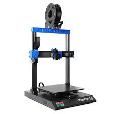

Impresoras 3D
Las impresoras 3D son dispositivos que crean objetos físicos a partir de modelos digitales. Funcionan depositando material capa por capa hasta formar la pieza completa.
Tecnologías principales
- FDM (Fused Deposition Modeling): Deposita filamento fundido capa por capa. Es económica y versátil. 
- SLA (Stereolithography): Utiliza resina líquida que se solidifica con luz UV para piezas detalladas.
- SLS (Selective Laser Sintering): Fusiona polvo de material con láser para crear objetos resistentes.
- DLP (Digital Light Processing): Similar a SLA pero más rápido, usando un proyector para curar resina.

Usos
- Prototipos rápidos y personalización de productos.
- Piezas industriales y mecánicas funcionales.
- Educación y desarrollo de habilidades técnicas.
- Medicina: prótesis, modelos anatómicos y planificación quirúrgica.
Consejos
- Elegir la impresora según el material y detalle requerido.
- Mantenimiento regular para garantizar calidad de impresión.
- Considerar el tamaño de construcción y velocidad de impresión.